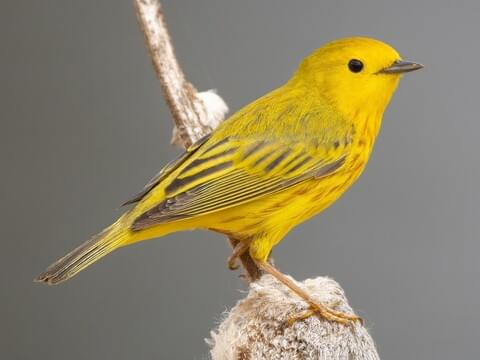
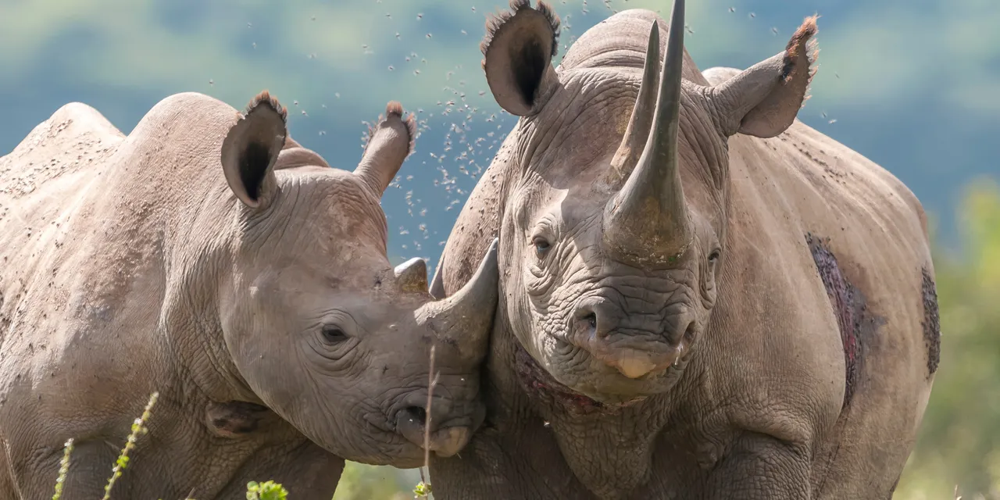
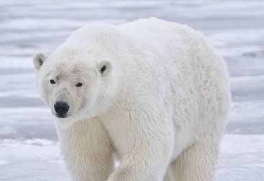

Animals of the World
| Amazing Animals of the World |
|
Common Name |
Picture |
Scientific Name |
Continent From |
Habitat |
Diet |
Interesting Fact |
| Birds |
Mallard Duck |
 |
Anas platyrhynchos |
North America and Eurasia |
Lakes and Ponds |
Omnivore |
Migrating flocks often travel up to 55 miles an hour |
| Northern Yellow Warbler Canary |
 |
Setophaga aestiva |
North America |
Open Woodlands |
Insects |
They are a small bird and have been found caught in strands of an
orb weaver spider's web
|
| Large 4 leg Animals |
Black Rhino |
 |
Diceros bicornis |
East and West Africa |
Semi-desert savanna, woodlands, forests, wetlands |
Herbivore, leafy plants, twigs, legumes, fruit and grass |
Critically endangered, in 1995 there were only 2500 left and today
over 6,500 due to conservation efforts
|
| Wild Horse |
 |
Equus caballus |
North America - Canada |
Forested areas, lodgepole pine woodlands with grassland, shrubland
and sedge meadows
|
grass, sandwort and washed up algae |
Wild horses are not in fact "Wild" mthey are considered feral |
| Cats |
Domestic Cat |
 |
Felis catus |
Global |
Nice warm Homes |
Obligate Carnivores |
They have exceptional hearing, 32 muscles per ear, can rotate them
180 degrees to hear and locate the faintest sounds
|
| Puma |
 |
Puma concolor |
Americas |
Deserts to snowy mountain slopes |
Obligate carnivores and ambush predators |
They hold the Guinness World Record for the animal with the most
common names, including cougar, puma, panther and catamount
|
| Critically Endangered |
Polar Bear |
 |
Ursus maritimus |
Artic |
Ringed and bearded seals because they need large amounts of fat to
survive
|
Artic Ocean, sea ice and adjacent coastal areas |
The females milk for their babies is equivelent to 32% fat milk -
like drinking whipping cream!
|